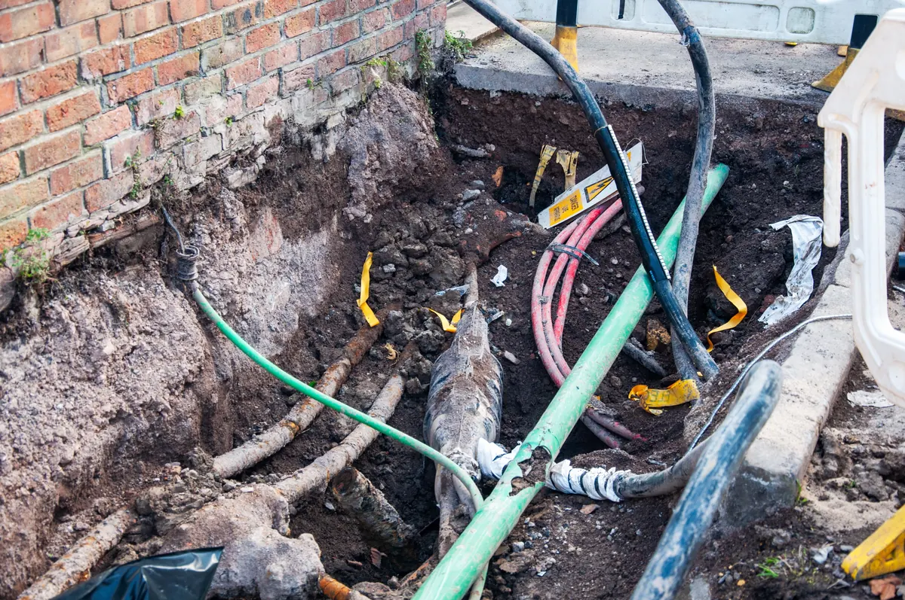

An underground drainpipe should carry wastewater away from your home smoothly and reliably. When that pipe is installed incorrectly, though, it may slowly shift, sag, crack, or collapse over time. The result is often a messy and stressful plumbing emergency: recurring drain backups, slow drains, foul odors, soggy spots in the yard, and in severe cases, sewage coming back into the home. If you're dealing with these warning signs, Angle Stop Plumbing is available with professional solutions to diagnose the problem and help restore proper flow.

What happens when underground drainpipes are installed the wrong way?
Underground drain lines depend on proper slope, stable bedding, correct pipe connections, and adequate support. If any of these are done poorly during installation, the pipe may function for a while and then begin to fail underground where the damage is hidden from view.
Common installation mistakes include:
- Incorrect slope - If the pipe is too flat, waste and paper can settle inside the line instead of moving through it. If the slope is too steep, liquids may outrun solids, leaving buildup behind.
- Poor soil compaction - Loose soil around the pipe can shift over time, causing sections to sink or become misaligned.
- Inadequate pipe bedding - Without proper material under and around the pipe, the line may develop stress points that crack or collapse.
- Improper pipe connections - Weak joints can separate, leak, or allow soil intrusion that destabilizes the line.
- Using the wrong pipe material or size - A pipe not suited to the load or soil conditions may deteriorate faster than expected.
- Heavy pressure from above - Vehicles, equipment, or structures placed over a poorly installed drain line can accelerate failure.
These issues do not always cause an immediate problem. In many cases, the drain line fails gradually until backups become a recurring issue.
How a collapsed underground drainpipe causes backups
Once a drainpipe starts to sag, crack, or cave in, wastewater can no longer move freely through the line. This creates a restriction that catches toilet paper, grease, debris, and waste. Over time, the blockage gets worse.
A collapsing drain line can lead to:
- Slow draining sinks, tubs, and showers
- Frequent toilet backups
- Gurgling sounds in drains
- Sewage odors in or around the home
- Water pooling in the yard above the line
- Wastewater backing up into tubs, showers, or floor drains
If multiple drains in the home are acting up at the same time, the problem may not be a simple clog. It may be a damaged main sewer or underground drain line that needs professional inspection.
Signs your underground drainpipe may be failing
Many homeowners do not realize they have a buried drain problem until the symptoms become severe. Catching the issue early can help limit property damage and repair costs.
Watch for these red flags:
- Drains that repeatedly clog even after being cleared
- Sewage backups that keep returning
- Wet or unusually green patches in the yard
- Sinkholes or soft spots over the pipe path
- Bad smells coming from drains or outside
- Foundation moisture issues near the drain line
- Plumbing problems that affect more than one fixture at once
These signs often point to something deeper than a surface-level blockage.
Why underground drainpipe collapse should never be ignored
A damaged underground drain line rarely fixes itself. In fact, it usually becomes more expensive the longer it is left alone. Small alignment issues can turn into full collapses. Minor backups can become major sanitation problems.
Ignoring the issue can result in:
- Repeated plumbing emergencies
- Water damage inside the home
- Unsanitary sewage exposure
- Landscape damage
- Foundation or slab concerns in some cases
- Higher repair costs later
A fast response can help protect your home and reduce disruption.
Professional solutions from Angle Stop Plumbing
When backups keep happening, guessing is expensive. Angle Stop Plumbing is available to help identify the cause and recommend the right repair. Whether the issue is a partial collapse, pipe separation, belly in the line, or a full underground failure, the right solution starts with a proper diagnosis.
Angle Stop Plumbing can help with solutions such as:
- Drain line inspections to locate the source of recurring backups
- Diagnosis of underground pipe failure caused by improper installation
- Targeted repair options for damaged sections of pipe
- Drain cleaning and blockage removal where buildup is contributing to poor flow
- Replacement of collapsed underground drain lines when the pipe can no longer be repaired
- Guidance on long-term plumbing protection to help prevent repeat issues
Instead of treating the symptoms over and over, a professional repair plan addresses the root cause of the problem.
Why homeowners choose expert help for underground drain problems
Underground plumbing issues are difficult to confirm without the right equipment and experience. A drain line may look fine from the surface while hiding serious structural failure below. That is why professional evaluation matters.
Working with an experienced plumbing team helps you:
- Get a more accurate diagnosis
- Avoid repeated temporary fixes
- Reduce the risk of further home damage
- Restore reliable drainage
- Make informed repair decisions
When a drain line collapse is causing backups, speed and accuracy matter.
Preventing future underground drain line problems
Not every underground drain failure can be prevented, but quality installation and timely service make a major difference. If your home has had repeated sewer or drain problems, it is worth having the line evaluated before the issue becomes a larger repair.
Helpful prevention steps include:
- Having recurring backups professionally investigated
- Addressing slow drains early
- Avoiding heavy vehicle traffic over buried lines
- Being cautious about what goes down drains
- Replacing failing sections before total collapse occurs
Prevention is almost always easier than cleanup after a sewage backup.
Call Angle Stop Plumbing for underground drainpipe solutions
If improperly installed underground drainpipes are causing backups at your home, Angle Stop Plumbing is available with solutions. From diagnosing the issue to recommending repair or replacement, taking action early can help you avoid bigger plumbing problems and costly damage.
When your drains keep backing up and the problem may be underground, trust Angle Stop Plumbing to help you move toward a lasting solution.